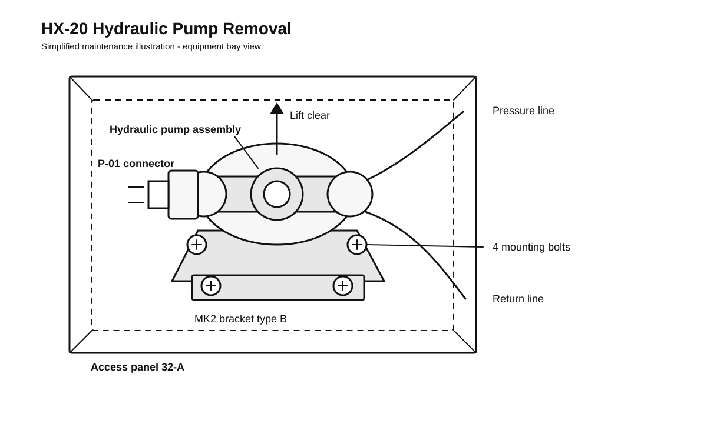

S1000D migration case study
HX-20 Legacy Maintenance Manual to S1000D
Fictional helicopter maintenance procedure audited, restructured and prepared as simplified S1000D-style data modules.
Migration Output
This is not a renamed manual page. The project output is a compact S1000D-style package in the s1000d/ folder: data modules, a publication module, applicability handling, an ICN-style illustration and migration notes.
Source Problem
The source document is a fictional Word-based maintenance manual for the HX-20 helicopter hydraulic pump. It represents a common migration problem: operationally important information stored in a document format that is difficult to reuse, validate or filter for product variants.
Legacy document issues
- Paragraph-based removal and installation procedures
- Repeated safety instructions in multiple sections
- MK2 configuration notes embedded in the main procedure
- Tool and material information mixed into narrative text
- No formal data module identity or publication structure
S1000D migration goals
- Separate content into maintainable data modules
- Assign clear data module codes for each information unit
- Move variant-specific instructions into applicability-controlled content
- Prepare procedures for validation and controlled publishing
- Assemble the final output through a publication module
The aircraft and manual are fictional, but the migration decisions mirror realistic technical publication work for complex equipment programs.
Legacy Source Document
The DOCX and PDF below are the source material used for the migration exercise, not the final migrated output. The source intentionally contains repeated safety content, embedded configuration notes and long procedural paragraphs so the restructuring work is visible.
Download source DOCX Open PDF previewSource preview
S1000D Migration Approach
Real-World Workflow
- Define project rules. Confirm the S1000D issue, business rules, BREX, SNS structure and required delivery format.
- Audit the source manual. Classify procedures, safety information, tools, variants, illustrations and cross-references.
- Create a DMRL. Define the required data modules, information types, ownership and status information.
- Assign data module codes. Map each content unit to a DMC based on system, subsystem, assembly and information code.
- Rewrite into structured procedures. Convert paragraph-based instructions into preliminary requirements, procedural steps and close-up requirements.
- Model applicability. Separate MK1 and MK2 differences with applicability instead of inline notes.
- Validate and publish. Check XML, schema, BREX rules, references and publication module output.
S1000D is not a software tool. It is a technical publication specification. In production, this workflow would normally use an XML editor, validation tools, a CSDB and publishing tools.
Content Mapping
Legacy source section S1000D-style output ------------------------------ -------------------------------- Hydraulic system overview Description data module Hydraulic pump removal Procedure data module Hydraulic pump installation Procedure data module Operational test Operational test data module Safety precautions Shared procedural safety content MK2 bracket note Applicability-controlled step Full maintenance manual Publication module
In S1000D, a file name such as DMC-HX20-A-29-10-00-00A-520A-A.xml is not just a readable label. It is a data module code that identifies the product, system, subsystem, information type and issue context.
Engineering Review Notes
Several technical values are intentionally treated as engineering-source data rather than invented in the portfolio example. In a production assignment, these items would be confirmed with engineering or approved reference data before release.
- Mounting bolt torque values and torque table references
- Hydraulic line and fitting identification, including wrench sizes
- Approved cleaning method and cleaning materials
- Operational test pressure, hold time and leakage criteria
- Normal hydraulic pressure range during flight control checks
Delivered S1000D-Style Output

Illustration Handling
In a production S1000D workflow, this illustration would be managed as a controlled information entity with an ICN and stored separately from the procedure data module. The procedure module would reference the illustration, while applicability rules would define whether it applies to MK1, MK2 or both configurations.
Procedure data module: Remove hydraulic pump
Data module: DMC-HX20-A-29-10-00-00A-520A-A.xml
Information type: Maintenance removal procedure
Applicability: HX-20 MK1 and MK2, with MK2-specific bracket step
- Disconnect electrical connector P-01.
- Disconnect hydraulic return and pressure lines.
- Install protective caps on disconnected hydraulic lines.
- Remove the mounting bolts from the support bracket.
- For MK2 aircraft, record the installed bracket type.
- Lift the hydraulic pump from the bracket.
<proceduralStep>
<para>Disconnect electrical connector P-01.</para>
</proceduralStep>
<proceduralStep>
<applic>
<evaluate andOr="and">
<assert applicPropertyIdent="model"
applicPropertyType="prodattr"
applicPropertyValues="mk2"/>
</evaluate>
</applic>
<para>Record the installed bracket type.</para>
</proceduralStep>
Read S1000D notes
View overview data module
View removal data module
View installation data module
View operational test data module
View publication module
Mini DMRL
Data module code Information type Status ------------------------------------------ -------------------- -------- DMC-HX20-A-29-10-00-00A-040A-A.xml System overview Draft DMC-HX20-A-29-10-00-00A-520A-A.xml Removal procedure Draft DMC-HX20-A-29-10-00-00A-720A-A.xml Installation procedure Draft DMC-HX20-A-29-10-00-00A-790A-A.xml Operational test Draft PMC-HX20-A-29-10-00-00A-000A-A.xml Publication module Draft
Deliverables
The project package includes the legacy Word/PDF source, simplified S1000D-style data modules, a publication module, an ICN-style illustration and explanatory migration notes. The XML files are the migration deliverables; the Word/PDF files are included only as source context.
S1000D migration planning Data module structure DMC assignment Applicability Maintenance procedures Operational test module Engineering review notes Publication module ICN-style technical illustrationWhat This Demonstrates
This project shows how a technical writer can move beyond document cleanup and think in terms of controlled technical information: source audit, module planning, procedural rewrite, applicability handling and publication assembly.
The result is a focused S1000D-oriented portfolio case for aerospace, defense, marine or other complex-system documentation environments.